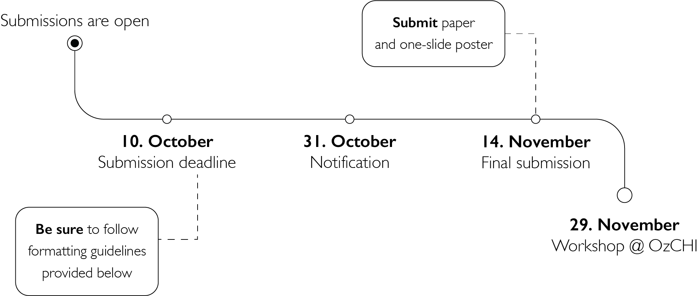

There is growing awareness that the future of robotics is a collaborative one. Although rapid technological advancements are driving the development and maturation of robotics platforms across a range of domains, the methods by which people work with these platforms remains a largely open question. Unpacking this solution requires a multifaceted approach with key contributions from diverse fields and disciplines, including user modelling, adaptive interfaces, persistent communication, interaction design, human factors, and situational awareness.
This workshop intends to discuss the opportunities, threats, and future of collaborative robotics, by incorporating multidisciplinary perspectives. We invite researchers and practitioners in Human-Computer Interaction, Robotics and Engineering, Ethics, Psychology, Social Sciences, Design, Architecture, and Artificial Intelligence to join us in exploring the requirements for next-generation human-robot collaboration and synthesising a path towards the future where people and robots work hand in hand.

Note: There will be a fee to attend this physical workshop. We will be sharing details about the registration fee soon.
Call for participation
We invite researchers with an interest in shaping the next-generation of human-robot collaboration (HRC) and empowering humans in human-robot teams to submit contributions. We encourage submissions on a wide spectrum of topics including (but not limited to) interaction design for HRC, user modelling, multimodal analytics, intention recognition and visualisation, formation and maintenance of trust, ethical HRC, data privacy, safety, socio-technical implications, and design of HRC evaluation metrics.
Submissions are now invited for the workshop. If you wish to submit a 1–5-page position paper or 1-page expression of interest (EOI) for consideration by the workshop organisers, you must satisfy the selection criteria and follow the submission process. For more information and any queries, please contact us at: stine.johansen@qut.edu.au or hashini.senaratne@data61.csiro.au. Selected position papers and EOIs will be publicly published on the workshop website.
Submission Details
Please include the following in your submission:
-
Position papers:
- Participants' profile
- A description of a topic or challenge that can contribute to workshop discussions
-
Expression of Interest (EOI) papers:
- Participants' profile
- Participants' interest in HRC
Authors should also provide their current city and affiliation (if applicable).
Formatting Details
-
Submission format: Single column format in PDF, using the ACM Master Article Submission Templates (Word or LaTeX version).
-
Page length: Position paper submissions should be maximum 5 pages (excluding references),_ EOI submissions_ should be maximum 1 page.
-
Anonymisation: Submissions should not be anonymised.
-
Submission method: Easy Chair System
The position papers and EOIs must relate directly to the theme of the workshop to explore crucial future research directions for advancing human-robot collaboration and discuss emerging concepts and design decisions, incorporating your discipline-specific perspective.
Important Dates
All times are within the Anywhere on Earth (AoE) time zone.
-
Submission deadline:
10 October 202224 October 2022 -
Notification date:
31 October 202204 November 2022 -
Final submission: 14 November 2022
-
Workshop Day: 29 November 2022
Upon Acceptance
Authors will be provided with a PowerPoint poster template to complete before the workshop. All participants will be invited to join an online community channel to say hello to each other before the conference.
Workshop Structure
| Time | Activity |
|---|---|
| 13.00 - 13.30 | Welcome address |
| 13.30 - 13.45 | Icebreaker |
| 13.45 - 14.30 | Speed meeting |
| 14.30 - 14.45 | Coffee break |
| 14.45 - 15.45 | Group brainstorming |
| 15.45 - 16.00 | Coffee break |
| 16.00 - 16.45 | Panel discussion |
| 16.45 - 17.00 | Closing |
Panellists
Dana Kulic (Monash University)

Professor Dana Kulić conducts research in robotics and human-robot interaction (HRI), and develops autonomous systems that can operate in concert with humans, using natural and intuitive interaction strategies while learning from user feedback to improve and individualize operation over long-term use. She received the combined B. A. Sc. and M. Eng. degree in electro-mechanical engineering, and the Ph. D. degree in mechanical engineering from the University of British Columbia, Canada, in 1998 and 2005, respectively. From 2006 to 2009, Dr. Kulić was a JSPS Post-doctoral Fellow and a Project Assistant Professor at the Nakamura-Yamane Laboratory at the University of Tokyo, Japan. In 2009, Dr. Kulić established the Adaptive System Laboratory at the University of Waterloo, Canada, conducting research in human robot interaction, human motion analysis for rehabilitation and humanoid robotics. Since 2019, Dr. Kulić is a professor and director of Monash Robotics at Monash University, Australia.
Lian Loke (University of Sydney)
Lian Loke is an Associate Professor of Interaction Design in the School of Architecture, Design and Planning, The University of Sydney. Lian's research in the multi-disciplinary field of human-computer interaction studies and stages the interactivity of humans and machines through a choreographic and somaesthetic lens. It is characterised by the translation of embodied knowledge from dance and somatics into an aesthetics of interaction that radically integrates epistemologies of practice from the arts and sciences. Her research explores how to design embodied and movement-based interactions and experiences with emerging technologies that support human agency, creative expression, skill and vitality. Her enduring interest in dance and the kinaesthetic imagination drives creative research into kinetic expression, with projects exploring how humans and robots can collaboratively interact through movement and gesture in a range of contexts from the personal and domestic to industrial. Most recently she co-curated the SHErobots exhibition, the first of its kind in Australia to showcase the pioneering work of women in robotics across architecture, art, design and technology.
Eduardo Benitez Sandoval (University of New South Wales)

Dr. Eduardo B. Sandoval is a social robotics researcher, his work spans different aspects of social robotics, such as Reciprocity in Human-Robot Interaction (HRI), robots and education, robots and healthcare, and addiction to robots among other topics. Mainly, He is interested in how people make decisions when they interact with robots and other interactive devices. Beyond traditional robotics, there is a growing interest in the idea of designing machines that are capable of meaningful social interactions with humans. His work incorporates insights from behavioural economics and social psychology in order to explore different approaches in social robotics. About his own work, Dr. Sandoval claims: "I can say as a result of working in social robotics I have a better understanding of the human condition." He holds a PhD in Human Interface Technology at the University of Canterbury, New Zealand, and currently, he is a researcher at the Creative Robotics Lab, University of New South Wales (UNSW), Sydney, Australia.
Workshop Organizers
Stine S. Johansen
Australian Cobotics Centre, QUT

Hashini Senaratne
CSIRO
![]()
Alan Burden
Australian Cobotics Centre, QUT

David Howard
CSIRO
Glenda Caldwell
Australian Cobotics Centre, QUT
Jared Donovan
Australian Cobotics Centre, QUT
Andreas Duenser
CSIRO
Matthias Guertler
Australian Cobotics Centre, QUT
Melanie McGrath
CSIRO
Cecile Paris
CSIRO
Markus Rittenbruch
Australian Cobotics Centre, QUT
Jonathan Roberts
Australian Cobotics Centre, QUT
Programming Committee
-
Stine S. Johansen (Australian Cobotics Centre, QUT)
-
Hashini Senaratne (CSIRO)
-
Alan Burden (Australian Cobotics Centre, QUT)
-
Glenda Caldwell (Australian Cobotics Centre, QUT)
-
Andreas Duenser (CSIRO)
-
Melanie McGrath (CSIRO)
-
Cecile Paris (CSIRO)
-
Zhuowei Wang (CSIRO)